import pandas as pd
import matplotlib.pyplot as plt # plt es el pseudónimo para llamar a matplotlib en el documentoCapítulo 4. Manipulación y Visualización de Datos
II. Preparación y Análisis de Datos
En el presente caso de estudio se busca continuar fortaleciendo las competencias relacionadas con la manipulación, exploración y análisis de datos utilizando Pandas, profundizando en herramientas y procedimientos fundamentales dentro del flujo de trabajo de un proyecto analítico. A través de ejercicios prácticos y del trabajo con conjuntos de datos reales, se pretende consolidar habilidades relacionadas con la carga, transformación, organización y análisis de información estructurada, permitiendo desarrollar una comprensión más sólida sobre cómo extraer conocimiento útil a partir de los datos.
El análisis de datos moderno requiere no solamente la capacidad de programar y manipular información, sino también la habilidad de estructurar adecuadamente un proyecto analítico, comprendiendo cada una de sus etapas y objetivos. Por esta razón, este caso de estudio busca reforzar los principios metodológicos asociados al desarrollo de proyectos de análisis de datos, promoviendo un enfoque organizado y reproducible para la resolución de problemas basados en información. Esto implica trabajar desde la comprensión del contexto y la calidad de los datos, hasta la generación de conclusiones e interpretación de resultados.
En esta etapa del aprendizaje, se pone especial énfasis en el uso de estructuras tabulares y operaciones avanzadas de manipulación de datos mediante Pandas, incluyendo procesos como filtrado, agrupación, agregación, transformación de variables y tratamiento de datos faltantes o inconsistentes. Estas tareas representan actividades habituales dentro de proyectos reales de analítica y ciencia de datos, donde la preparación adecuada de la información constituye una condición indispensable para obtener resultados confiables y relevantes.
Adicionalmente, este caso de estudio introduce una primera aproximación al proceso de visualización de datos mediante el uso de Matplotlib, una de las librerías más utilizadas en el ecosistema de Python para la construcción de gráficos y representaciones visuales. La visualización de datos desempeña un papel fundamental dentro del análisis, ya que permite identificar patrones, tendencias, relaciones y comportamientos que muchas veces no son evidentes únicamente a través de tablas o estadísticas numéricas.
A lo largo de este caso, se explorarán distintos tipos de gráficos básicos orientados a comunicar información de manera clara y efectiva, comprendiendo además criterios elementales de diseño e interpretación visual. La capacidad de representar resultados gráficamente constituye una habilidad esencial dentro de disciplinas como analítica de negocios, inteligencia artificial, investigación aplicada y ciencia de datos, donde la comunicación efectiva de hallazgos resulta tan importante como el análisis mismo.
En conjunto, las actividades planteadas buscan integrar habilidades técnicas de programación, manipulación de datos y visualización, junto con capacidades analíticas y metodológicas necesarias para abordar problemas reales basados en información. De esta manera, podrás avanzar progresivamente hacia la construcción de proyectos analíticos más completos, estructurados y orientados a la generación de conocimiento útil para la toma de decisiones.
Entendimiento del contexto
La industria del turismo es aquella que se enfoca en traer personas a destinos específicos localizados en zonas geográficas que ofrezcan características escénicas, culturales o naturales altamente demandadas. Esta actividad puede clasificarse en turismo receptivo o emisivo. El primero de estos se enfoca en establecer productos o servicios propios en dichas zonas y buscar clientes alrededor del mundo para ocupar los espacios provistos; por su parte el segundo se especializa en llevar turistas a destinos fuera de sus lugares habituales de residencia, generando un ciclo económico virtuoso.
Visto esto, Metropolitan Touring (en adelante, MT) se constituye en el principal operador de turismo receptivo en Ecuador y Perú, teniendo como principal destino a las islas Galápagos, cuya fama radica en su valor único en cuanto a diversidad y especialidad biológica y botánica. En consecuencia, la empresa oferta cruceros en aproximadamente 150 salidas anuales de 4 y 6 noches, a las cuales acompaña con la venta de tickets aéreos para conectar a los turistas con los aeropuertos insulares, y otros servicios complementarios como transfers, visitas guiadas y alojamientos para quienes estén interesados.
Entre los principales canales de venta de MT destacan mayoristas de turismo emisivo y agencias de viaje. Los mayoristas pueden ser de 3 tipos:
- Charters: Empresas que compran la totalidad de los espacios disponibles en algunas salidas de barcos para su posterior reventa y adicionan otros servicios complementarios.
- FIT (Free Independent Traveler): Empresas que se especializan en la reventa de servicios a grupos de viajeros independientes bajo demanda y con un esquema personalizado.
- Grupos: Empresas que se especializan en la reventa a grupos de turistas preprogramados con fechas e itinerarios ya definidos (i.e Asociaciones y clubes, grupos empresariales).
La empresa desea ejecutar análisis estratégicos semanales y mensuales para tomar decisiones en las unidades comercial y de marketing, por lo cual te ha pedido apoyo para la preparación de su información y su posterior análisis en base a preguntas de negocio concretas.
Entendimiento de los datos
Ante todo, recuerda cargar las librerías que utilizarás en este documento. Importa por tanto Pandas y el módulo Pyplot de la librería Matplotlib. Sobre esta última vale mencionar que la misma provee de funciones y métodos para la ejecución de visualizaciones mediante gráficos.
MT ha compartido contigo información de sus ventas en el año 2023 para los canales de venta y productos referidos en el apartado anterior. Estos datos están disponibles en el dataset ventas2023.txt. Carga el dataset con la función read_table de Pandas dado el tipo y separador del archivo. Incluye además el argumento index_col = 0 puesto que la primera columna del archivo no es más que un contador de filas.
df_ventas = pd.read_table(
"https://raw.githubusercontent.com/jsaraujo5081/material_curso_data_science/refs/heads/main/datasets/ventas2023.txt",
sep = "\t",
index_col = 0 # La primera columna (posición 0) en el archivo original es un índice de filas
)Estudia la estructura de estos datos con el método info.
df_ventas.info()<class 'pandas.core.frame.DataFrame'>
Index: 754 entries, 0 to 753
Data columns (total 6 columns):
# Column Non-Null Count Dtype
--- ------ -------------- -----
0 fecha 754 non-null object
1 canal 754 non-null object
2 tickets_aereos 487 non-null float64
3 barco_1 138 non-null float64
4 barco_2 248 non-null float64
5 otros_servicios 745 non-null float64
dtypes: float64(4), object(2)
memory usage: 41.2+ KBEsta tabla cuenta con 754 registros y 6 columnas descritas a continuación:
| Columna | Descripción |
|---|---|
| fecha | Fecha en la que se realizó el viaje. |
| canal | Tipo de cliente al cual se le vendió uno o más servicios. |
| tickets_aereos | Valor de venta en miles de USD por concepto de tickets aéreos. |
| barco_1 | Valor de venta en miles de USD por concepto de salidas de cruceros en itinerario de 4 noches. |
| barco_2 | Valor de venta en miles de USD por concepto de salidas de cruceros en itinerario de 6 noches. |
| otros_servicios | Valor de venta en miles de USD por concepto de otros servicios menores. |
Explora el dataset con el propósito de generar un plan de acción para preparar los datos.
# Generar una muestra de los datos (random_state permite que la muestra sea reproducible)
df_ventas.sample(15, random_state = 123)| fecha | canal | tickets_aereos | barco_1 | barco_2 | otros_servicios | |
|---|---|---|---|---|---|---|
| 701 | 06/12/2023 | WS - FIT | 0.26732 | NaN | NaN | 25.34881 |
| 345 | 06/06/2023 | WS - FIT | 3.19934 | NaN | 29.22363 | 17.44482 |
| 514 | 29/08/2023 | WS - FIT | NaN | NaN | NaN | 0.32800 |
| 611 | 23/10/2023 | WS - Other | 2.84730 | NaN | NaN | 16.51620 |
| 164 | 17/03/2023 | Charter | 20.24580 | 150.9408 | NaN | 1.54625 |
| 55 | 27/01/2023 | Agencias | 2.16220 | NaN | 25.95120 | 4.11478 |
| 161 | 15/03/2023 | WS - FIT | 0.52000 | NaN | NaN | 18.62064 |
| 461 | 03/08/2023 | Agencias | 6.50526 | NaN | NaN | 36.67967 |
| 381 | 23/06/2023 | WS - Other | 1.56306 | NaN | 16.04884 | 0.02000 |
| 188 | 28/03/2023 | Agencias | 5.98850 | NaN | 64.32850 | 24.39564 |
| 725 | 18/12/2023 | WS - FIT | 4.62742 | NaN | 38.99275 | 3.57710 |
| 627 | 01/11/2023 | WS - FIT | NaN | NaN | NaN | 4.61910 |
| 232 | 17/04/2023 | Agencias | 1.08110 | 8.7660 | NaN | 1.73000 |
| 200 | 04/04/2023 | Agencias | NaN | NaN | NaN | 4.20485 |
| 156 | 12/03/2023 | WS - FIT | NaN | NaN | NaN | 7.23540 |
# Mirar las opciones posibles en la columna canal
df_ventas["canal"].unique()array(['Agencias', 'WS - FIT', 'WS - Other', 'Charter'], dtype=object)# Presentar un resumen estadístico de las variables numéricas
df_ventas.describe(include = "float").round(2)| tickets_aereos | barco_1 | barco_2 | otros_servicios | |
|---|---|---|---|---|
| count | 487.00 | 138.00 | 248.00 | 745.00 |
| mean | 4.51 | 46.14 | 31.64 | 11.27 |
| std | 6.55 | 52.46 | 44.66 | 12.56 |
| min | 0.00 | 0.00 | 0.00 | 0.00 |
| 25% | 1.10 | 8.02 | 8.46 | 1.76 |
| 50% | 2.14 | 15.48 | 16.08 | 7.31 |
| 75% | 4.70 | 101.62 | 34.19 | 16.04 |
| max | 47.33 | 160.37 | 235.92 | 115.83 |
# Verificar la existencia de duplicados
print(df_ventas.duplicated().sum())0
TipPlan de acción para preparación de datos
| Problema detectado | Acción planificada |
|---|---|
| La columna fecha es de tipo object. | Cambiar el tipo de variable de fecha a datetime. |
| Los análisis requeridos son por mes y semana, pero no se cuenta con este detalle. | A partir de la columna fecha, extraer nuevas columnas de mes, semana y dia_semana. |
| Los valores de la columna canal no se ajustan al contexto. | Cambiar los valores de la columna canal de forma que muestren una de las siguientes opciones más acordes al contexto: Charter, FIT, Grupos o Agencias. |
| Existen valores perdidos en las columnas con información de ventas. | Imputar valores perdidos en las columnas que muestran ventas por un valor de 0 puesto que se corresponden a ventas por ese valor. |
| Los valores de venta se encuentran escalados en miles de USD. | Transformar los valores de venta a USD para una mejor comprensión de los mismos dentro de los futuros análisis. |
| Probablemente se requieren columnas agregadas de venta para los análisis, pero que actualmente no existen en los datos. | Generar columnas venta_total, venta_barcos y venta_otros que contengan las ventas agregadas de los servicios correspondientes para cada registro. |
NotaNecesidades latentes
El último problema detectado hace referencia a una posible interpretación que nosotros como expertos en datos damos al contexto del caso. En muchas ocasiones existen necesidades latentes por parte de clientes o jefes que no son expresadas directamente. Por esta razón conviene desarrollar esta habilidad mediante la investigación continua en ámbitos como administración de negocios y organización industrial.
Preparación de datos
Cambia el tipo de variable de la columna fecha. Considera que los textos de las fechas en la tabla están en el formato día/mes/año por lo cual deberías incorporar el argumento format.
df_ventas["fecha"] = pd.to_datetime(
df_ventas["fecha"],
format = "%d/%m/%Y"
)
df_ventas.info()<class 'pandas.core.frame.DataFrame'>
Index: 754 entries, 0 to 753
Data columns (total 6 columns):
# Column Non-Null Count Dtype
--- ------ -------------- -----
0 fecha 754 non-null datetime64[ns]
1 canal 754 non-null object
2 tickets_aereos 487 non-null float64
3 barco_1 138 non-null float64
4 barco_2 248 non-null float64
5 otros_servicios 745 non-null float64
dtypes: datetime64[ns](1), float64(4), object(1)
memory usage: 41.2+ KBExtrae los componentes de mes, día de la semana y semana a partir de la columna fecha.
# Extraer columna mes
df_ventas["mes"] = df_ventas["fecha"].dt.month
# Extraer columna dia_semana
df_ventas["dia_semana"] = df_ventas["fecha"].dt.weekday
# Extraer columna semana
df_ventas["semana"] = df_ventas["fecha"].dt.isocalendar().week
df_ventas[["mes", "dia_semana", "semana"]].describe().loc[["min", "max"]]| mes | dia_semana | semana | |
|---|---|---|---|
| min | 1.0 | 0.0 | 1.0 |
| max | 12.0 | 6.0 | 52.0 |
NotaSemanas ISO
El número de la semana al que se corresponde a una fecha es un concepto ambiguo. Por ejemplo, este valor puede cambiar si se considera que el inicio de la semana es domingo respecto a si se toma como referencia de inicio el lunes. Así también, pueden existir diferencias en cuanto a la especificación de cuál es la “primera” semana del año. Para superar estas discrepancias, siempre conviene tomar como referencia un estándar internacional que en este caso está dado por las semanas ISO. Su definición está dada por lo siguiente:
- La primera semana del año corresponde a aquella que contenga el primer jueves de dicho año.
- Cada semana empieza los días lunes y termina los domingos.
Tanto el mes como el día de la semana poseen una representación más semántica. En concreto para el caso de mes, 1 representa enero, 2 es febrero, etc. Utiliza el método merge para hacer que la columna mes sea más semántica. Apóyate con el siguiente dataset auxiliar:
cat_mes = pd.DataFrame({
"mes": list(range(1,13)),
"mes_nombre": ["01.Ene","02.Feb","03.Mar","04.Abr","05.May","06.Jun","07.Jul","08.Ago","09.Sep","10.Oct","11.Nov","12.Dic"]
})# Cargar catálogo de meses
cat_mes = pd.DataFrame({
"mes": list(range(1,13)),
"mes_nombre": ["01.Ene","02.Feb","03.Mar","04.Abr","05.May","06.Jun","07.Jul","08.Ago","09.Sep","10.Oct","11.Nov","12.Dic"]
})
# Unir datasets con merge
df_ventas = df_ventas.merge(
cat_mes,
on = "mes"
)
# Sustituir mes con nombres de dichos meses
df_ventas["mes"] = df_ventas["mes_nombre"]
df_ventas = df_ventas.drop(columns = "mes_nombre")
df_ventas["mes"].unique()array(['01.Ene', '02.Feb', '03.Mar', '04.Abr', '05.May', '06.Jun',
'07.Jul', '08.Ago', '09.Sep', '10.Oct', '11.Nov', '12.Dic'],
dtype=object)Ahora utiliza el método apply para hacer que la columna dia_semana sea más semántica. Considera que el día 0 corresponde al lunes.
# Definir función de asignación de nombres de días
def dia_semantico(x):
if x == 0:
return "01.Lun"
elif x == 1:
return "02.Mar"
elif x == 2:
return "03.Mie"
elif x == 3:
return "04.Jue"
elif x == 4:
return "05.Vie"
elif x == 5:
return "06.Sab"
else:
return "07.Dom"
# Aplicar función en columna dia_semana
df_ventas["dia_semana"] = df_ventas["dia_semana"].apply(dia_semantico)
df_ventas["dia_semana"].unique()array(['07.Dom', '01.Lun', '02.Mar', '03.Mie', '04.Jue', '05.Vie',
'06.Sab'], dtype=object)Cambia los valores de la columna canal por Charter, FIT, Grupos o Agencias según corresponda. Emplea el método apply.
# Definir función de asignación de nombres correctos
def nombres_canal(x):
if x == "WS - FIT":
return "FIT"
elif x == "WS - Other":
return "Grupos"
else:
return x
df_ventas["canal"] = df_ventas["canal"].apply(nombres_canal)
df_ventas["canal"].value_counts()canal
FIT 336
Grupos 207
Agencias 170
Charter 41
Name: count, dtype: int64Imputa el valor de 0 a los valores ausentes de todas las columnas que representen ventas.
col_venta = ["tickets_aereos", "barco_1", "barco_2", "otros_servicios"]
for c in col_venta:
df_ventas[c] = df_ventas[c].fillna(0)
df_ventas.info()<class 'pandas.core.frame.DataFrame'>
RangeIndex: 754 entries, 0 to 753
Data columns (total 9 columns):
# Column Non-Null Count Dtype
--- ------ -------------- -----
0 fecha 754 non-null datetime64[ns]
1 canal 754 non-null object
2 tickets_aereos 754 non-null float64
3 barco_1 754 non-null float64
4 barco_2 754 non-null float64
5 otros_servicios 754 non-null float64
6 mes 754 non-null object
7 dia_semana 754 non-null object
8 semana 754 non-null UInt32
dtypes: UInt32(1), datetime64[ns](1), float64(4), object(3)
memory usage: 50.9+ KBTransforma los valores de las columnas de venta de miles de USD a USD.
for c in col_venta:
df_ventas[c] = df_ventas[c] * 1000
df_ventas.describe(include = float).round(2)| tickets_aereos | barco_1 | barco_2 | otros_servicios | |
|---|---|---|---|---|
| count | 754.00 | 754.00 | 754.00 | 754.00 |
| mean | 2914.70 | 8445.53 | 10407.66 | 11137.91 |
| std | 5685.11 | 28627.17 | 29591.13 | 12541.33 |
| min | 0.00 | 0.00 | 0.00 | 0.00 |
| 25% | 0.00 | 0.00 | 0.00 | 1562.62 |
| 50% | 1078.60 | 0.00 | 0.00 | 7210.11 |
| 75% | 2806.46 | 0.00 | 8464.50 | 15937.62 |
| max | 47325.60 | 160374.60 | 235915.20 | 115830.85 |
Genera las columnas venta_barcos, venta_otros y venta_total que consoliden las ventas por estos servicios según corresponda.
# Crear columna venta_barcos
df_ventas["venta_barcos"] = df_ventas["barco_1"] + df_ventas["barco_2"]
# Crear columna venta_otros
df_ventas["venta_otros"] = df_ventas["tickets_aereos"] + df_ventas["otros_servicios"]
# Crear columna venta_total
df_ventas["venta_total"] = df_ventas["venta_barcos"] + df_ventas["venta_otros"]
df_ventas.info()<class 'pandas.core.frame.DataFrame'>
RangeIndex: 754 entries, 0 to 753
Data columns (total 12 columns):
# Column Non-Null Count Dtype
--- ------ -------------- -----
0 fecha 754 non-null datetime64[ns]
1 canal 754 non-null object
2 tickets_aereos 754 non-null float64
3 barco_1 754 non-null float64
4 barco_2 754 non-null float64
5 otros_servicios 754 non-null float64
6 mes 754 non-null object
7 dia_semana 754 non-null object
8 semana 754 non-null UInt32
9 venta_barcos 754 non-null float64
10 venta_otros 754 non-null float64
11 venta_total 754 non-null float64
dtypes: UInt32(1), datetime64[ns](1), float64(7), object(3)
memory usage: 68.6+ KB¡Listo! El dataset se encuentra limpio para iniciar la etapa de análisis. Concluye finalmente reorganizando la tabla de tal manera que:
- Se excluyan las columnas de tickets_aereos, barco_1, barco_2 y otros_servicios.
- Se reordenen las columnas tal que este sea el orden: canal, fecha, mes, semana, dia_semana, venta_total, venta_barcos, venta_otros.
# Eliminar columnas que ya no se utilizarán
df_ventas_final = df_ventas.copy()
df_ventas_final = df_ventas_final.drop(columns = col_venta)
df_ventas_final.info()<class 'pandas.core.frame.DataFrame'>
RangeIndex: 754 entries, 0 to 753
Data columns (total 8 columns):
# Column Non-Null Count Dtype
--- ------ -------------- -----
0 fecha 754 non-null datetime64[ns]
1 canal 754 non-null object
2 mes 754 non-null object
3 dia_semana 754 non-null object
4 semana 754 non-null UInt32
5 venta_barcos 754 non-null float64
6 venta_otros 754 non-null float64
7 venta_total 754 non-null float64
dtypes: UInt32(1), datetime64[ns](1), float64(3), object(3)
memory usage: 45.0+ KB# Reordenar columnas
col_orden = ["canal", "fecha", "mes", "semana", "dia_semana", "venta_total", "venta_barcos", "venta_otros"]
df_ventas_final = df_ventas_final[col_orden]
df_ventas_final.sample(10, random_state = 123)| canal | fecha | mes | semana | dia_semana | venta_total | venta_barcos | venta_otros | |
|---|---|---|---|---|---|---|---|---|
| 701 | FIT | 2023-12-06 | 12.Dic | 49 | 03.Mie | 25616.13 | 0.00 | 25616.13 |
| 345 | FIT | 2023-06-06 | 06.Jun | 23 | 02.Mar | 49867.79 | 29223.63 | 20644.16 |
| 514 | FIT | 2023-08-29 | 08.Ago | 35 | 02.Mar | 328.00 | 0.00 | 328.00 |
| 611 | Grupos | 2023-10-23 | 10.Oct | 43 | 01.Lun | 19363.50 | 0.00 | 19363.50 |
| 164 | Charter | 2023-03-17 | 03.Mar | 11 | 05.Vie | 172732.85 | 150940.80 | 21792.05 |
| 55 | Agencias | 2023-01-27 | 01.Ene | 4 | 05.Vie | 32228.18 | 25951.20 | 6276.98 |
| 161 | FIT | 2023-03-15 | 03.Mar | 11 | 03.Mie | 19140.64 | 0.00 | 19140.64 |
| 461 | Agencias | 2023-08-03 | 08.Ago | 31 | 04.Jue | 43184.93 | 0.00 | 43184.93 |
| 381 | Grupos | 2023-06-23 | 06.Jun | 25 | 05.Vie | 17631.90 | 16048.84 | 1583.06 |
| 188 | Agencias | 2023-03-28 | 03.Mar | 13 | 02.Mar | 94712.64 | 64328.50 | 30384.14 |
NotaEliminar y reordenar columnas
Estos últimos pasos solamente los hacemos para practicar manipulación de datos con las funciones y métodos de Pandas. En la práctica no suele ser recomendable eliminar columnas, excepto que ya no aporten información. Y la reorganización de columnas no aporta ningún valor estratégico en las siguientes etapas de análisis.
Análisis de datos
Recuerda que para un correcto análisis vale que tengas siempre en cuenta lo siguiente:
- Su propósito fundamental es responder preguntas de negocio, por lo que siempre debes buscar dar soluciones concretas en base a tus resultados.
- No se limita a realizar gráficos o tablas resumen, sino a generar conclusiones que aporten valor a partir de estas visualizaciones.
- Debe mantener un hilo de ideas conductor lo cual implica orden y consistencia entre los resultados.
Ahora bien, las unidades comerciales y de marketing de MT te plantean las siguientes preguntas:
¿Cuál ha sido el comportamiento semanal de las ventas totales?
Más allá de la definición de métricas, filtros y agregaciones que ya conocemos, para realizar una correcta visualización que responda una pregunta de negocio de manera efectiva conviene que sigas estos pasos:
- Agrega adecuadamente los datos definiendo una métrica o indicador relevante, las variables de agrupamiento y los filtros pertinentes.
- Evalúa si el resultado de la agregación a modo de tabla es suficiente para responder la pregunta de negocio o un gráfico resultaría más claro y entendible.
- Si según tu criterio, un gráfico ayuda más a responder la pregunta, créalo de forma simple sin preocuparte por ahora de los aspectos formales del mismo.
- Genera las conclusiones correspondientes aportando con ellas valor a la toma de decisiones.
- Regresa al gráfico o tabla creado y aplica los aspectos formales que consideres pertinentes.
Agrega entonces los datos de una forma pertinente. Recuerda usar métodos como groupby o pivot_table.
# Agregar los datos
vta_sem = df_ventas_final.groupby("semana")["venta_total"].sum()
vta_semsemana
1 777941.17
2 392163.91
3 533500.01
4 588888.76
5 429178.27
6 558930.73
7 557427.69
8 594065.62
9 295739.27
10 748061.20
11 459471.28
12 672993.27
13 583083.72
14 656134.39
15 366326.99
16 767874.43
17 567242.02
18 507390.31
19 552635.08
20 795769.84
21 441931.88
22 544667.36
23 405076.17
24 671797.29
25 224072.18
26 398216.79
27 521831.52
28 550815.62
29 576525.93
30 475545.59
31 631988.49
32 619131.95
33 616371.85
34 348905.91
35 374551.81
36 138644.01
37 143645.80
38 98184.34
39 465707.66
40 321065.29
41 313941.10
42 546072.23
43 216686.46
44 439056.02
45 416582.06
46 465913.02
47 398959.89
48 422617.73
49 345096.69
50 361194.85
51 273139.49
52 638220.07
Name: venta_total, dtype: float64Si bien la tabla obtenida muestra los resultados deseados, existe mucha información en el sentido que hay 52 semanas, lo cual dificulta la interpretación acerca del comportamiento de ventas. Entonces, vale que realices un gráfico mediante el método plot.
# Crear gráfico simple
vta_sem.plot()
plt.show() # Acostúmbrate a utilizar esta línea a fin de que solo se muestre el gráfico generado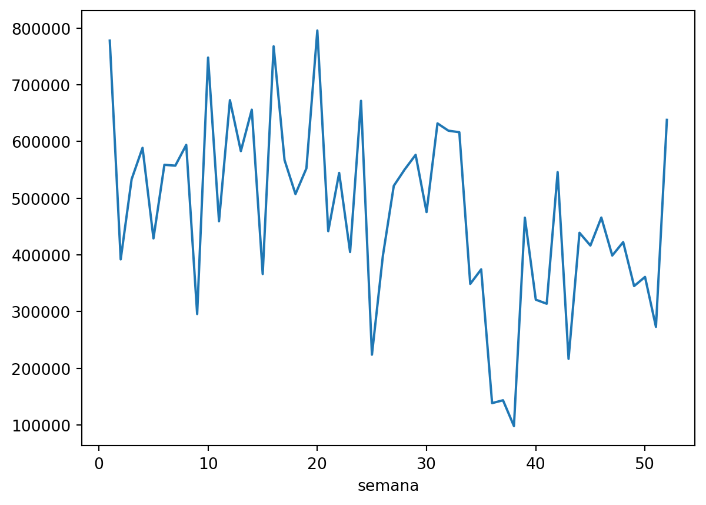
Proporciona al menos dos conclusiones relevantes a partir de la observación de este gráfico.
TipConclusiones
| # | Conclusión |
|---|---|
| 1 | Las ventas totales de MT se reducen significativamente entre las semanas 35 a 40 debido a que las mismas corresponden al final del período de vacaciones (Ago - Sep). En estas fechas el tiempo invertido en servicios recreativos -como el turismo- es considerablemente menor debido a algunos factores como el inicio de clases en institutos y universidades. De manera complementaria, la necesidad de ahorro para afrontar fechas importantes posteriores en el año como es la navidad, incide igualmente en esta época del año. |
| 2 | Se observan mayores ventas entre las semanas 10 a 20, las cuales corresponden aproximadamente a los meses de marzo y abril. Esto se explica porque en estas fechas muchos países tienen vacaciones asociadas a la Semana Santa o el inicio de la primavera (Hemisferio Norte) y los turistas aprovechan estos feriados para viajar. Lo expuesto permitiría inferir además que un grupo significativo de pasajeros de MT proviene de países como Estados Unidos en donde el Spring Break es un momento importante para visitar otras zonas geográficas. |
Finalmente repite el gráfico con los aspectos formales que estimes necesarios. Utiliza para estos distintos argumentos del método plot así como funciones de la librería Matplotlib.
# Crear gráfico con formato
vta_sem.plot(
title = "Comportamiento semanal de ventas | Todos los productos",
ylabel = "USD",
xlabel = "",
figsize = [8,5],
grid = True,
marker = ".",
color = "dodgerblue",
ylim = [0,810000]
)
plt.xticks(range(1,53,5))
plt.show()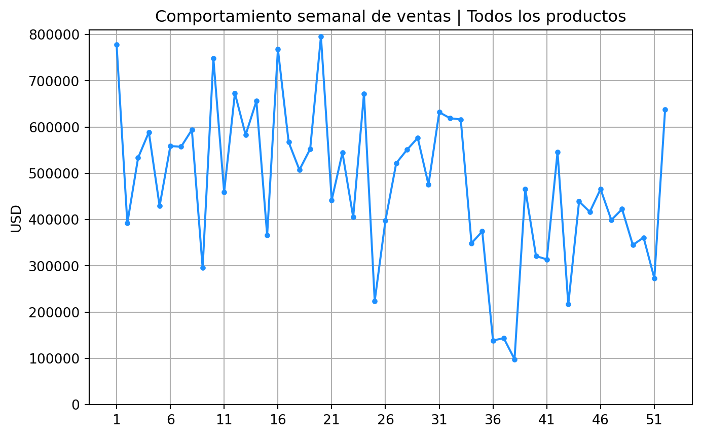
NotaGalerías de Matplotlib
Si deseas dominar las capacidades detrás de las visualizaciones con Matplotlib, te sugiero mirar las galerías de muestra de la librería. Intenta replicar estos gráficos con datos propios para familiarizarte con las funciones y métodos existentes, así como con sus correspondientes argumentos y atributos.
¿Cuál es la venta promedio de barcos cada día de la semana?
Sigue los mismos pasos de la pregunta anterior para dar una respuesta satisfactoria. Para practicar visualizaciones con Matplotlib, así consideres que los mismos no son necesarios igualmente créalos.
# Agregar los datos
vta_dia = df_ventas_final.groupby("dia_semana")["venta_barcos"].mean()
vta_diadia_semana
01.Lun 11989.319565
02.Mar 13488.948191
03.Mie 7286.292198
04.Jue 22508.218100
05.Vie 35103.379134
06.Sab 26083.212857
07.Dom 9010.733762
Name: venta_barcos, dtype: float64# Crear gráfico simple
vta_dia.plot(
kind = "bar"
)
plt.show()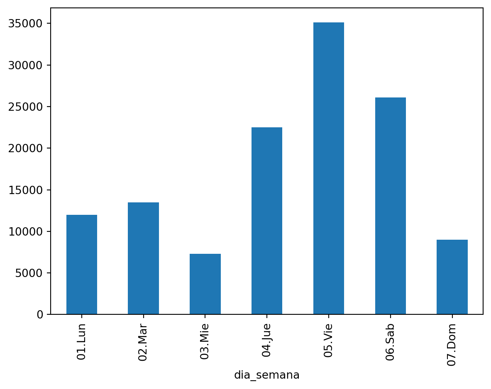
TipConclusiones
| # | Conclusión |
|---|---|
| 1 | La venta promedio de barcos en la empresa es mayor los días viernes y sábado, lo cual es coherente en cuanto a que los turistas tienden a preferir viajes que se superpongan con los fines de semana para minimizar los días que toman libres en sus trabajos. Esto se complementa también cuando se evidencia una menor venta en los días miércoles (mitad de semana laborable) y domingo (retorno para prepararse para el trabajo). |
# Crear gráfico con formato
vta_dia.plot(
kind = "bar",
title = "Venta promedio por día de la semana | Barcos",
ylabel = "USD",
xlabel = "",
rot = 90,
figsize = [8,5],
color = "goldenrod"
)
plt.grid(
axis = "y",
linestyle = "--",
color = "gray",
alpha = 0.5
)
plt.show()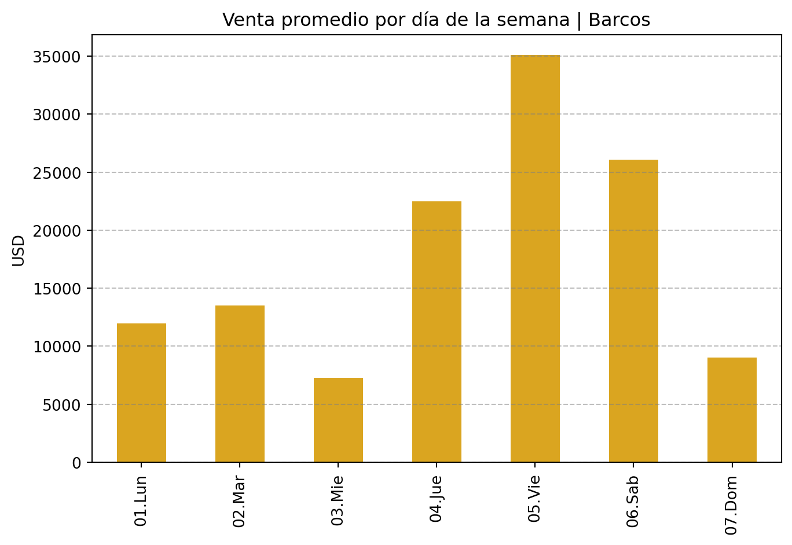
¿Cómo se comportan las ventas por canal?
Sigue nuevamente los mismos pasos de la pregunta anterior para dar una respuesta satisfactoria.
# Ejecutar todos los pasos de agregación y visualización recomendados
vta_canal = df_ventas_final.groupby("canal")["venta_total"].sum().sort_values(ascending = True)
vta_canal.plot(
kind = "barh"
)
plt.show()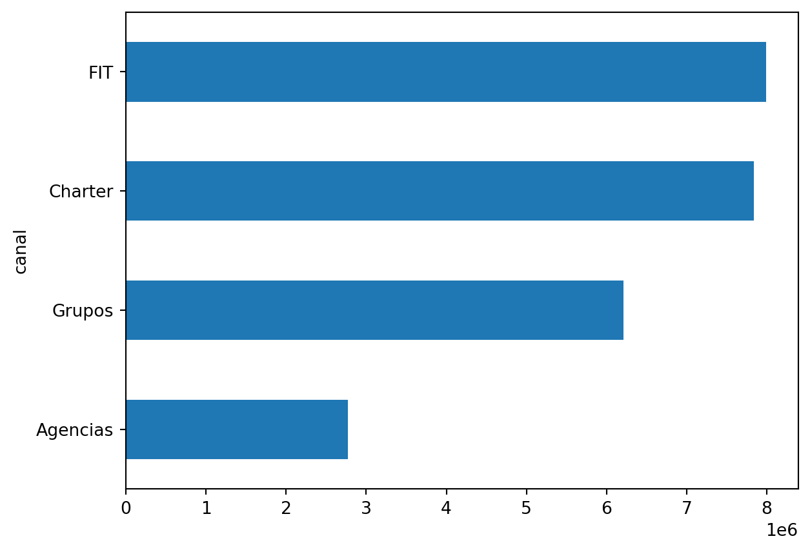
TipConclusiones
| # | Conclusión |
|---|---|
| 1 | El canal agencias es el de menor venta total lo cual se explicaría porque la demanda atendida por el mismo se asocia a pequeños grupos (generalmente familias o parejas). En cualquier caso se recomendaría que a partir de estos resultados se incentiven las ventas de este canal en MT ya sea con una mayor inversión de marketing o bien mediante la ampliación de un equipo de ventas especializado. |
# Crear gráfico con formato
vta_canal.plot(
kind = "barh",
title = "Ventas por canal | Todos los productos",
ylabel = "",
xlabel = "M USD",
figsize = [6,4],
color = "cyan",
edgecolor = "blue"
)
i = 0
for c in vta_canal.index:
plt.annotate(
text = f"{vta_canal.loc[c]/1000000:.1f} M USD",
xy = [vta_canal.loc[c] - 1500000, i - 0.05]
)
i += 1
plt.show()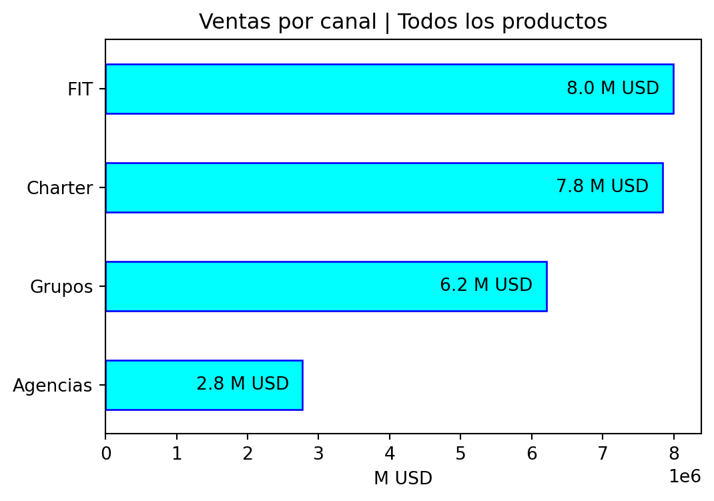
Nota¿Qué tamaño debe tener un gráfico?
¿Cuál es el tamaño adecuado de un gráfico? Esta pregunta es muy común entre analistas y científicos de datos puesto que no hay una respuesta sencilla. Sin embargo, a continuación te doy tres recomendaciones:
- En primer lugar asegúrate de que la visualización sea lo suficientemente grande como para ver todos sus detalles con claridad.
- A continuación verifica que la misma pueda ser vista completa en la pantalla. Esto es, que no se requiera hacer scroll para acceder a toda su información.
- Finalmente considera unas proporciones armónicas entre largo y alto. Usualmente yo empleo el criterio de la proporción áurea, la cual indica que una de las dimensiones debe ser aproximadamente 1.6 veces la otra (p. ej., si el largo es 4, entonces el alto debería estar entre 6 o 7 ya que \(4 \times 1.6 = 6.4\)).
Entendimiento de nuevos datos
Vistos los buenos resultados alcanzados hasta el momento por tu análisis, MT te provee de nueva información constante en el dataset pax_tours2023.xlsx.
Carga esta tabla en tu documento con la función read_excel considerando que su extensión es xlsx, y a continuación mira su estructura.
# Cargar datos
df_paxtours = pd.read_excel("https://github.com/jsaraujo5081/material_curso_data_science/raw/refs/heads/main/datasets/pax_tours2023.xlsx")
# Mirar la estructura de los datos
df_paxtours.info()<class 'pandas.core.frame.DataFrame'>
RangeIndex: 48 entries, 0 to 47
Data columns (total 4 columns):
# Column Non-Null Count Dtype
--- ------ -------------- -----
0 canal 48 non-null object
1 mes 48 non-null int64
2 pax 48 non-null int64
3 tours 48 non-null int64
dtypes: int64(3), object(1)
memory usage: 1.6+ KBEl dataframe consta de 48 filas y 4 columnas descritas a continuación:
| Columna | Descripción |
|---|---|
| canal | Tipo de cliente asociado a las ventas del 2023. |
| mes | Mes del 2023 en el cual se hizo el viaje. |
| pax | Cantidad de pasajeros que corresponden a ese canal y mes de venta. |
| tours | Cantidad de grupos que corresponden a ese canal y mes de venta. |
Estudia este dataset y define un plan de acción para procesarlo y posteriormente unirlo satisfactoriamente con la información que ya tienes sobre venta.
# Generar muestra de los datos
df_paxtours.sample(10, random_state = 123)| canal | mes | pax | tours | |
|---|---|---|---|---|
| 18 | Charter | 7 | 170 | 5 |
| 13 | Charter | 2 | 184 | 5 |
| 26 | WS - FIT | 3 | 370 | 129 |
| 31 | WS - FIT | 8 | 387 | 81 |
| 10 | Agencias | 11 | 87 | 26 |
| 40 | WS - Other | 5 | 741 | 27 |
| 39 | WS - Other | 4 | 912 | 36 |
| 8 | Agencias | 9 | 22 | 8 |
| 11 | Agencias | 12 | 91 | 26 |
| 5 | Agencias | 6 | 60 | 18 |
# Obtener casos únicos de columna canal
df_paxtours["canal"].unique()array(['Agencias', 'Charter', 'WS - FIT', 'WS - Other'], dtype=object)# Obtener un resumen estadístico de pax y tours
df_paxtours[["pax", "tours"]].describe().round(0)| pax | tours | |
|---|---|---|
| count | 48.0 | 48.0 |
| mean | 321.0 | 36.0 |
| std | 316.0 | 37.0 |
| min | 22.0 | 1.0 |
| 25% | 86.0 | 8.0 |
| 50% | 194.0 | 25.0 |
| 75% | 396.0 | 42.0 |
| max | 1371.0 | 129.0 |
TipPlan de acción para preparación de datos
| # | Problema detectado | Acción planificada |
|---|---|---|
| 1 | Los valores de la columna canal no se ajustan al contexto. | Cambiar los valores de la columna canal por Agencias, FIT, Grupos y Charter. |
| 2 | Los meses no están presentados de manera semántica. | Cambiar los valores de mes por su nombre propio. |
| 3 | La información de pasajeros presenta un detalle de mes y canal mientras que la de ventas tiene un detalle por transacción. | Agregar la información de ventas a niveles de canal y mes para que su detalle sea compatible con la nueva información y puedan unificarse ambas fuentes de datos. |
| 4 | La información de ventas y de pasajeros está en tablas distintas. | Unir las tablas para contar con una sola fuente de información para los análisis. |
Preparación de datos (II)
Pon en marcha el plan de acción definido de manera ordenada y clara.
# Cambiar valores de canal
df_paxtours["canal"] = df_paxtours["canal"].apply(nombres_canal)
df_paxtours["canal"].unique()array(['Agencias', 'Charter', 'FIT', 'Grupos'], dtype=object)# Ajustar nombres de meses para que sean más semánticos
df_paxtours = df_paxtours.merge(
cat_mes,
on = "mes"
)
df_paxtours["mes"] = df_paxtours["mes_nombre"]
df_paxtours = df_paxtours.drop(columns = "mes_nombre")
df_paxtours["mes"].unique()array(['01.Ene', '02.Feb', '03.Mar', '04.Abr', '05.May', '06.Jun',
'07.Jul', '08.Ago', '09.Sep', '10.Oct', '11.Nov', '12.Dic'],
dtype=object)# Agregar datos de venta a nivel de canal y mes
df_ventas_ag = (
df_ventas_final
.groupby(["canal", "mes"])
[["venta_total", "venta_barcos", "venta_otros"]].sum()
.reset_index() # Con el método reset_index se establece que las variables de agrupamiento sean columnas del dataset (y no índices)
)
df_ventas_ag.sample(5, random_state = 123)| canal | mes | venta_total | venta_barcos | venta_otros | |
|---|---|---|---|---|---|
| 18 | Charter | 07.Jul | 902701.33 | 741036.80 | 161664.53 |
| 13 | Charter | 02.Feb | 833412.27 | 606741.60 | 226670.67 |
| 26 | FIT | 03.Mar | 889446.72 | 460197.35 | 429249.37 |
| 31 | FIT | 08.Ago | 892813.13 | 329024.88 | 563788.25 |
| 10 | Agencias | 11.Nov | 227446.53 | 126658.12 | 100788.41 |
# Unir datos de pax y tours con ventas
df_consolidado = df_ventas_ag.merge(
df_paxtours,
on = ["canal", "mes"],
how = "left" # Se utiliza la forma left para garantizar que todas las filas de ventas estén disponibles
)
df_consolidado.info()<class 'pandas.core.frame.DataFrame'>
RangeIndex: 48 entries, 0 to 47
Data columns (total 7 columns):
# Column Non-Null Count Dtype
--- ------ -------------- -----
0 canal 48 non-null object
1 mes 48 non-null object
2 venta_total 48 non-null float64
3 venta_barcos 48 non-null float64
4 venta_otros 48 non-null float64
5 pax 48 non-null int64
6 tours 48 non-null int64
dtypes: float64(3), int64(2), object(2)
memory usage: 2.8+ KBImprime una muestra de tu dataset consolidado para validar que se encuentre listo para el análisis.
df_consolidado.sample(10, random_state = 123)| canal | mes | venta_total | venta_barcos | venta_otros | pax | tours | |
|---|---|---|---|---|---|---|---|
| 18 | Charter | 07.Jul | 902701.33 | 741036.80 | 161664.53 | 170 | 5 |
| 13 | Charter | 02.Feb | 833412.27 | 606741.60 | 226670.67 | 184 | 5 |
| 26 | FIT | 03.Mar | 889446.72 | 460197.35 | 429249.37 | 370 | 129 |
| 31 | FIT | 08.Ago | 892813.13 | 329024.88 | 563788.25 | 387 | 81 |
| 10 | Agencias | 11.Nov | 227446.53 | 126658.12 | 100788.41 | 87 | 26 |
| 40 | Grupos | 05.May | 410976.82 | 144610.38 | 266366.44 | 741 | 27 |
| 39 | Grupos | 04.Abr | 724293.92 | 390658.53 | 333635.39 | 912 | 36 |
| 8 | Agencias | 09.Sep | 70919.94 | 57475.92 | 13444.02 | 22 | 8 |
| 11 | Agencias | 12.Dic | 408264.45 | 255896.37 | 152368.08 | 91 | 26 |
| 5 | Agencias | 06.Jun | 264609.30 | 179120.00 | 85489.30 | 60 | 18 |
Análisis de datos (II)
Con la nueva información disponible, continúa respondiendo preguntas de negocio.
¿Cuál es el comportamiento mensual del precio pagado por pasajero?
precio_mes = df_consolidado.groupby(["mes"])[["venta_total", "pax"]].sum()
precio_mes["precio"] = precio_mes["venta_total"] / precio_mes["pax"]
graf = precio_mes.plot(
y = "precio",
legend = False,
marker = "o",
title = "Precio por pasajero mensual | Todos los productos",
ylabel = "USD por Pax",
xlabel = "",
figsize = [8,5],
xticks = range(0,12),
rot = 90,
color = "tomato",
grid = True
)
graf.set_facecolor("lightblue")
plt.show()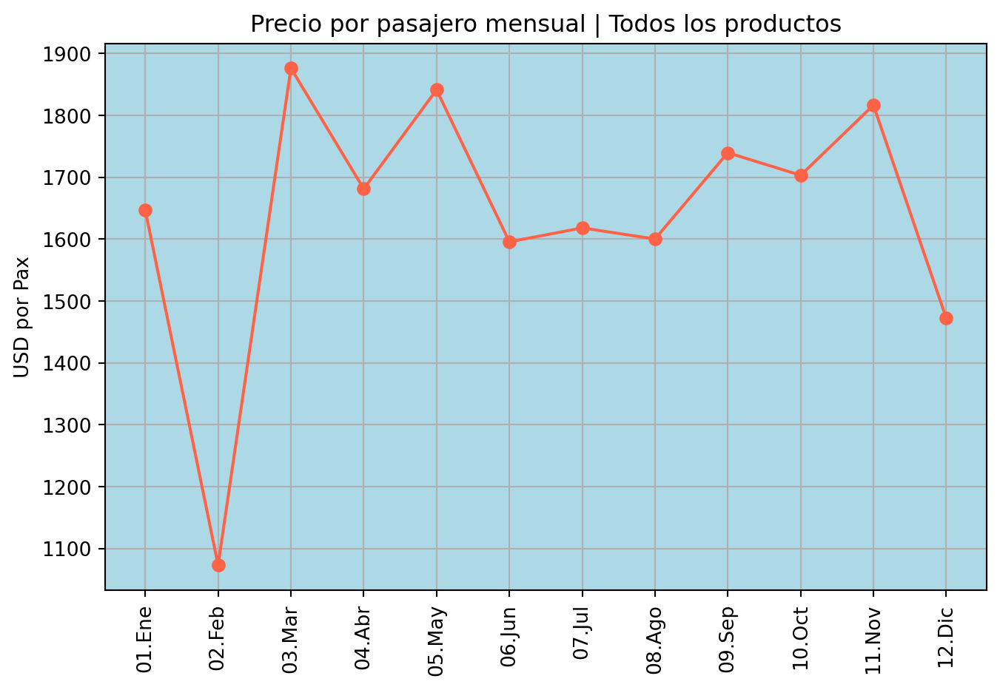
TipConclusiones
| # | Conclusión |
|---|---|
| 1 | La reducción en el precio observado en los meses de febrero y diciembre responderían a la aplicación de políticas de descuentos que compensen una potencial baja demanda esperable en el turismo durante estos momentos del año (temporadas bajas cercanas a feriados de navidad y año nuevo). |
¿Cómo se comporta el precio pagado por pasajero en cada canal?
precio_canal = df_consolidado.groupby(["canal"])[["venta_total", "pax"]].sum()
precio_canal["precio"] = precio_canal["venta_total"] / precio_canal["pax"]
precio_canal = precio_canal.sort_values(by = "precio")
graf = precio_canal.plot(
kind = "barh",
y = "precio",
legend = False,
title = "Precio por pasajero por canal | Todos los productos",
xlabel = "USD por Pax",
ylabel = "",
figsize = [6,4],
color = "#7deb34",
edgecolor = "#105908"
)
graf.spines["top"].set_visible(False)
graf.spines["right"].set_visible(False)
plt.grid(axis = "x", color = "#d62a0f", linestyle = ":")
plt.show()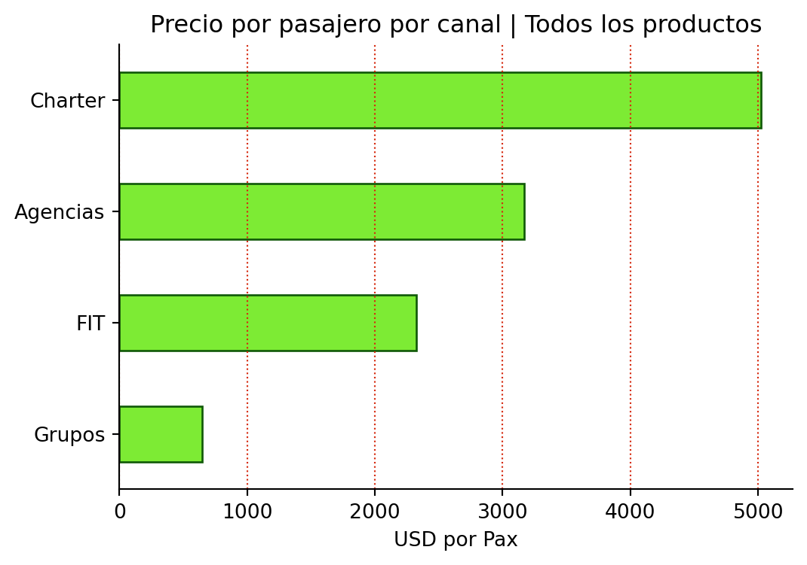
TipConclusiones
| # | Conclusión |
|---|---|
| 1 | Los charters tienen el valor de precio por pasajero más alto lo cual es consistente con la naturaleza de este canal en cuanto MT recibe un pago por la totalidad de las salidas de barcos sin que esto implique una completa ocupación real. De hecho, las salidas de charters tienen en promedio una ocupación de 65%, por lo que cada pasajero representa un valor de 154% del valor real del crucero. |
| 2 | Si bien el canal agencias tiene una baja participación en las ventas totales, el precio por pasajero es mayor que aquellos observados en otros canales. Esto permite inferir su potencial rentabilidad que sustenta aún más la recomendación de generar una mayor inversión para fortalecer sus actividades y enfoque. |
¿Existen diferencias en el año respecto al tamaño de los tours que viajan por el canal Agencias respecto a los FIT?
Es importante aclarar que “tamaño de tours” hace referencia a la cantidad de pasajeros en cada tour.
canales_analisis = ["Agencias", "FIT"]
pax_tours = df_consolidado.copy().query("canal == @canales_analisis")
pax_tours["pax_por_tour"] = pax_tours["pax"] / pax_tours["tours"]
pax_tours = pax_tours.pivot_table(
index = "mes",
columns = "canal",
values = "pax_por_tour",
aggfunc = "median"
)
pax_tours.plot(
title = "Tamaño de grupos | Agencias vs FIT",
ylabel = "Pax por Tour",
xlabel = "",
figsize = [8,5],
color = ["dodgerblue", "tomato"],
style = ["-", "-."],
marker = "x",
grid = True,
rot = 90,
xticks = range(0,12),
yticks = range(2,5)
)
plt.legend(title = "", ncol = 2, facecolor = "#e8be25")
plt.show()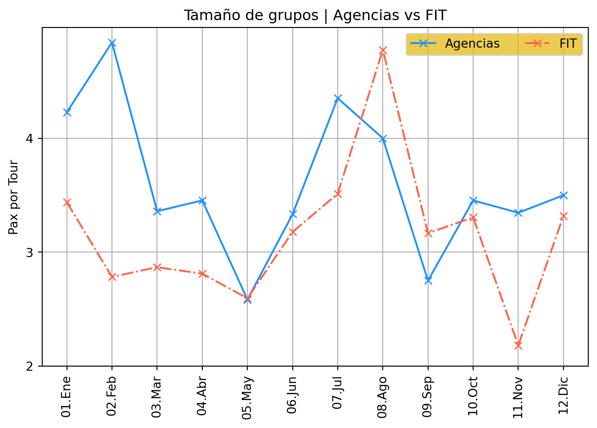
TipConclusiones
| # | Conclusión |
|---|---|
| 1 | Agencias y FIT compiten con mayor intensidad en los meses de verano (Jun - Jul - Ago) en el nicho de viajes “familiares”. Lo anterior queda en evidencia al observar que ambos tienen tamaños de grupos similares y con más de 3 pasajeros por tour. |
| 2 | Entre los meses de febrero y abril, e igual en noviembre, el canal FIT tiene un enfoque más asociado a parejas o grupos familiares reducidos (con tamaños de grupo cercanos a 2). Por su parte, Agencias sigue atendiendo a mercados familiares. Quizás esto es parte de la explicación del porqué las ventas por este último canal son menores, visto que en períodos de clases en institutos y universidades la demanda por viajes familiares es significativamente menor. |
Ejercicios de práctica
En estos ejercicios continuarás practicando los fundamentos de manipulación de datos con Pandas en lo referente a:
- Concatenación de dataframes.
- Unión de dataframes.
- Aplicación de funciones para enriquecer datos.
También profundizarás en tus habilidades para desarrollar visualizaciones con Matplotlib, lo cual te ayudará a complementar de mejor manera tus análisis futuros como científico de datos. Intenta resolver cada ejercicio por tu cuenta antes de desplegar la solución.
Concatenación de dataframes
Ejercicio 1
Considera los siguientes tres datasets de ejemplo:
df1 = pd.DataFrame({
"col_A": [0, 1, 2, 3],
"col_B": ["b0","b1","b2","b3"],
"col_C": ["c0","c1","c2","c3"],
"col_D": [4, 15, 26, 37]
}, index = [0, 1, 2, 3])
df2 = pd.DataFrame({
"col_1": ["val_1","val_2","val_3","val_4"],
"col_2": [45, 32, 67, 104],
"col_3": [-1.3, 1.45, 0.76, 0.91],
"col_4": ["x_1","x_2","x_3","x_4"]
}, index = [1, 2, 3, 4])
df3 = pd.DataFrame({
"col_A": [8, 9, 10],
"col_B": ["b4","b5",np.nan],
"col_C": ["c4","c5",np.nan]
}, index = ["f1","f2","f3"])Cárgalos en tu archivo importando primero las librerías Pandas y Numpy.
NotaSolución
# Cargar librerías
import pandas as pd
import numpy as np
# Cargar datasets
df1 = pd.DataFrame({
"col_A": [0, 1, 2, 3],
"col_B": ["b0","b1","b2","b3"],
"col_C": ["c0","c1","c2","c3"],
"col_D": [4, 15, 26, 37]
}, index = [0, 1, 2, 3])
df2 = pd.DataFrame({
"col_1": ["val_1","val_2","val_3","val_4"],
"col_2": [45, 32, 67, 104],
"col_3": [-1.3, 1.45, 0.76, 0.91],
"col_4": ["x_1","x_2","x_3","x_4"]
}, index = [1, 2, 3, 4])
df3 = pd.DataFrame({
"col_A": [8, 9, 10],
"col_B": ["b4","b5",np.nan],
"col_C": ["c4","c5",np.nan]
}, index = ["f1","f2","f3"])Imprime los 3 datasets para visualizarlos de manera más clara.
NotaSolución
print(df1)
print()
print(df2)
print()
print(df3) col_A col_B col_C col_D
0 0 b0 c0 4
1 1 b1 c1 15
2 2 b2 c2 26
3 3 b3 c3 37
col_1 col_2 col_3 col_4
1 val_1 45 -1.30 x_1
2 val_2 32 1.45 x_2
3 val_3 67 0.76 x_3
4 val_4 104 0.91 x_4
col_A col_B col_C
f1 8 b4 c4
f2 9 b5 c5
f3 10 NaN NaNEjercicio 2
Concatena df1, df2 y df3 por filas utilizando la función concat y el argumento axis = 0.
NotaSolución
resultado = pd.concat(
[df1, df2, df3],
axis = 0
)
print(resultado) col_A col_B col_C col_D col_1 col_2 col_3 col_4
0 0.0 b0 c0 4.0 NaN NaN NaN NaN
1 1.0 b1 c1 15.0 NaN NaN NaN NaN
2 2.0 b2 c2 26.0 NaN NaN NaN NaN
3 3.0 b3 c3 37.0 NaN NaN NaN NaN
1 NaN NaN NaN NaN val_1 45.0 -1.30 x_1
2 NaN NaN NaN NaN val_2 32.0 1.45 x_2
3 NaN NaN NaN NaN val_3 67.0 0.76 x_3
4 NaN NaN NaN NaN val_4 104.0 0.91 x_4
f1 8.0 b4 c4 NaN NaN NaN NaN NaN
f2 9.0 b5 c5 NaN NaN NaN NaN NaN
f3 10.0 NaN NaN NaN NaN NaN NaN NaN
NotaEl argumento axis
El argumento axis = 0 está predefinido por defecto, por lo que si no lo especificas en tu código tu resultado será una concatenación por filas.
Ejercicio 3
Concatena df1, df2 y df3 por columnas usando la función concat y su argumento axis = 1.
NotaSolución
resultado = pd.concat(
[df1, df2, df3],
axis = 1
)
print(resultado) col_A col_B col_C col_D col_1 col_2 col_3 col_4 col_A col_B col_C
0 0.0 b0 c0 4.0 NaN NaN NaN NaN NaN NaN NaN
1 1.0 b1 c1 15.0 val_1 45.0 -1.30 x_1 NaN NaN NaN
2 2.0 b2 c2 26.0 val_2 32.0 1.45 x_2 NaN NaN NaN
3 3.0 b3 c3 37.0 val_3 67.0 0.76 x_3 NaN NaN NaN
4 NaN NaN NaN NaN val_4 104.0 0.91 x_4 NaN NaN NaN
f1 NaN NaN NaN NaN NaN NaN NaN NaN 8.0 b4 c4
f2 NaN NaN NaN NaN NaN NaN NaN NaN 9.0 b5 c5
f3 NaN NaN NaN NaN NaN NaN NaN NaN 10.0 NaN NaN
NotaUniones outer e inner en concat
En general la función concat hace una unión de tablas tipo outer tomando como clave los nombres de filas o columnas. En el caso de concatenación por filas (axis = 0) la unión considera las columnas, mientras que en la concatenación por columnas (axis = 1) se consideran las filas como clave.
Si deseas probar una unión tipo inner en este caso (que excluirá valores ausentes), puedes modificar el argumento join.
Unión de dataframes
Ejercicio 1
Considera ahora los siguientes dataframes de ejemplo:
dataset_1 = pd.DataFrame({
"key": ["a","b","c","d"],
"col_A": [45, 50, 32, 21],
"col_B": [True, True, False, True],
})
dataset_2 = pd.DataFrame({
"key": ["a","b","d"],
"col_A": ["pera", "manzana", "mandarina"],
"col_B": [0, 1, 0]
})Cárgalos e imprímelos en tu archivo.
NotaSolución
# Cargar datasets
dataset_1 = pd.DataFrame({
"key": ["a","b","c","d"],
"col_A": [45, 50, 32, 21],
"col_B": [True, True, False, True],
})
dataset_2 = pd.DataFrame({
"key": ["a","b","d"],
"col_A": ["pera", "manzana", "mandarina"],
"col_B": [0, 1, 0]
})
# Imprimir datasets
print(dataset_1)
print()
print(dataset_2) key col_A col_B
0 a 45 True
1 b 50 True
2 c 32 False
3 d 21 True
key col_A col_B
0 a pera 0
1 b manzana 1
2 d mandarina 0Usa el método merge para unir los datasets con un inner join, y usando la columna key como clave.
NotaSolución
resultado = dataset_1.merge(
dataset_2,
how = "inner",
on = "key"
)
print(resultado) key col_A_x col_B_x col_A_y col_B_y
0 a 45 True pera 0
1 b 50 True manzana 1
2 d 21 True mandarina 0Realiza la misma unión que en el caso anterior, solo que ahora especifica sufijos distintos para columnas con el argumento suffixes.
NotaSolución
resultado = dataset_1.merge(
dataset_2,
how = "inner",
on = "key",
suffixes = ["_d1", "_d2"]
)
print(resultado) key col_A_d1 col_B_d1 col_A_d2 col_B_d2
0 a 45 True pera 0
1 b 50 True manzana 1
2 d 21 True mandarina 0Modifica el resultado anterior para que ahora la unión sea de tipo left.
NotaSolución
resultado = dataset_1.merge(
dataset_2,
how = "left",
on = "key",
suffixes = ["_d1", "_d2"]
)
print(resultado) key col_A_d1 col_B_d1 col_A_d2 col_B_d2
0 a 45 True pera 0.0
1 b 50 True manzana 1.0
2 c 32 False NaN NaN
3 d 21 True mandarina 0.0
NotaLa función pd.merge
Otra forma válida y equivalente de hacer uniones es mediante el uso de la función pd.merge. Por ejemplo para este último ejercicio, el código con esta forma sería el siguiente:
resultado = pd.merge(
dataset_1, dataset_2,
how = "left",
on = "key",
suffixes = ["_d1", "_d2"]
)
print(resultado)Ejercicio 2
Considera los siguientes dataframes de ejemplo:
dataset_3 = pd.DataFrame({
"key_1": ["x", "x", "y", "z"],
"key_2": [100, -50, 100, -50],
"col_A": ["a0", "a1", "a2", "a3"],
"col_B": [True, False, False, True]
})
dataset_4 = pd.DataFrame({
"key_1": ["x", "y", "y", "z"],
"key_2": [100, 100, 100, 100],
"col_C": [2010, 2025, 2021, 2008],
"col_D": ["d0","d1","d2", "d3"]
})Cárgalos e imprímelos en pantalla.
NotaSolución
# Cargar datos
dataset_3 = pd.DataFrame({
"key_1": ["x", "x", "y", "z"],
"key_2": [100, -50, 100, -50],
"col_A": ["a0", "a1", "a2", "a3"],
"col_B": [True, False, False, True]
})
dataset_4 = pd.DataFrame({
"key_1": ["x", "y", "y", "z"],
"key_2": [100, 100, 100, 100],
"col_C": [2010, 2025, 2021, 2008],
"col_D": ["d0","d1","d2", "d3"]
})
# Imprimir datos
print(dataset_3)
print()
print(dataset_4) key_1 key_2 col_A col_B
0 x 100 a0 True
1 x -50 a1 False
2 y 100 a2 False
3 z -50 a3 True
key_1 key_2 col_C col_D
0 x 100 2010 d0
1 y 100 2025 d1
2 y 100 2021 d2
3 z 100 2008 d3Une los datasets con un inner join, usando las llaves key_1 y key_2 a la vez.
NotaSolución
resultado = dataset_3.merge(
dataset_4,
how = "inner",
on = ["key_1", "key_2"]
)
print(resultado) key_1 key_2 col_A col_B col_C col_D
0 x 100 a0 True 2010 d0
1 y 100 a2 False 2025 d1
2 y 100 a2 False 2021 d2Repite la unión anterior pero ahora utiliza un outer join.
NotaSolución
resultado = dataset_3.merge(
dataset_4,
how = "outer",
on = ["key_1", "key_2"]
)
print(resultado) key_1 key_2 col_A col_B col_C col_D
0 x -50 a1 False NaN NaN
1 x 100 a0 True 2010.0 d0
2 y 100 a2 False 2025.0 d1
3 y 100 a2 False 2021.0 d2
4 z -50 a3 True NaN NaN
5 z 100 NaN NaN 2008.0 d3Ahora usa un right join.
NotaSolución
resultado = dataset_3.merge(
dataset_4,
how = "right",
on = ["key_1", "key_2"]
)
print(resultado) key_1 key_2 col_A col_B col_C col_D
0 x 100 a0 True 2010 d0
1 y 100 a2 False 2025 d1
2 y 100 a2 False 2021 d2
3 z 100 NaN NaN 2008 d3
NotaElegir el tipo de unión
Existen diferentes tipos de uniones por lo que tu labor como analista o científico de datos será siempre estudiar a detalle el caso en el que estés trabajando y el propósito de la unión que desees realizar. A partir de allí, deberás escoger si usar una unión left, inner, outer, o right.
Aplicación de funciones para enriquecer datos
Ejercicio 1
Ejecuta el siguiente código para crear un dataset de forma aleatoria.
import pandas as pd
import numpy as np
np.random.seed(123)
# Fechas
fechas = pd.date_range(start="2023-01-01", periods=100, freq="D")
# Datos simulados
ventas = np.random.randint(100, 700, size=100)
gastos_marketing = np.random.randint(50, 200, size=100)
gastos_personal = np.random.randint(80, 300, size=100)
# Crear el DataFrame
df = pd.DataFrame({
"fecha": fechas,
"ventas": ventas,
"gastos_marketing": gastos_marketing,
"gastos_personal": gastos_personal
})
df.sample(10)
NotaSolución
import pandas as pd
import numpy as np
np.random.seed(123)
# Definir fechas
fechas = pd.date_range(start="2023-01-01", periods=100, freq="D")
# Simular datos
ventas = np.random.randint(100, 700, size=100)
gastos_marketing = np.random.randint(50, 200, size=100)
gastos_personal = np.random.randint(80, 300, size=100)
# Crear el DataFrame
df = pd.DataFrame({
"fecha": fechas,
"ventas": ventas,
"gastos_marketing": gastos_marketing,
"gastos_personal": gastos_personal
})
df.sample(10, random_state = 123)| fecha | ventas | gastos_marketing | gastos_personal | |
|---|---|---|---|---|
| 8 | 2023-01-09 | 223 | 185 | 161 |
| 70 | 2023-03-12 | 151 | 110 | 157 |
| 82 | 2023-03-24 | 322 | 87 | 288 |
| 28 | 2023-01-29 | 422 | 184 | 197 |
| 63 | 2023-03-05 | 457 | 106 | 99 |
| 0 | 2023-01-01 | 610 | 96 | 295 |
| 5 | 2023-01-06 | 117 | 50 | 124 |
| 50 | 2023-02-20 | 258 | 112 | 154 |
| 81 | 2023-03-23 | 359 | 84 | 263 |
| 4 | 2023-01-05 | 198 | 95 | 244 |
Crea una nueva columna estado en la que indique si “hay ganancia” cuando las ventas sean mayores a la suma de gastos_marketing y gastos_personal, o “hay pérdida” en caso contrario. Utiliza el método apply con el argumento axis = 1 visto que se requieren varias columnas del dataset en el cálculo deseado.
NotaSolución
# Definir función para asignación
def definir_estado(row):
if row["ventas"] > row["gastos_marketing"] + row["gastos_personal"]:
return "hay ganancia"
else:
return "hay pérdida"
# Crear nueva columna con método apply
df["estado"] = df.apply(definir_estado, axis = 1)
print(df.sample(10, random_state = 123)) fecha ventas gastos_marketing gastos_personal estado
8 2023-01-09 223 185 161 hay pérdida
70 2023-03-12 151 110 157 hay pérdida
82 2023-03-24 322 87 288 hay pérdida
28 2023-01-29 422 184 197 hay ganancia
63 2023-03-05 457 106 99 hay ganancia
0 2023-01-01 610 96 295 hay ganancia
5 2023-01-06 117 50 124 hay pérdida
50 2023-02-20 258 112 154 hay pérdida
81 2023-03-23 359 84 263 hay ganancia
4 2023-01-05 198 95 244 hay pérdidaEjercicio 2
Crea una nueva columna llamada razon_perdida en la cual se especifique “marketing” si los gastos de este tipo son mayores a los de personal o “personal” en caso contrario, pero solamente cuando el estado sea de pérdida.
NotaSolución
def definir_razon(row):
if row["estado"] == "hay pérdida":
if row["gastos_marketing"] > row["gastos_personal"]:
return "marketing"
else:
return "personal"
else:
return "no aplica"
df["razon"] = df.apply(definir_razon, axis = 1)
df.sample(10, random_state = 123)| fecha | ventas | gastos_marketing | gastos_personal | estado | razon | |
|---|---|---|---|---|---|---|
| 8 | 2023-01-09 | 223 | 185 | 161 | hay pérdida | marketing |
| 70 | 2023-03-12 | 151 | 110 | 157 | hay pérdida | personal |
| 82 | 2023-03-24 | 322 | 87 | 288 | hay pérdida | personal |
| 28 | 2023-01-29 | 422 | 184 | 197 | hay ganancia | no aplica |
| 63 | 2023-03-05 | 457 | 106 | 99 | hay ganancia | no aplica |
| 0 | 2023-01-01 | 610 | 96 | 295 | hay ganancia | no aplica |
| 5 | 2023-01-06 | 117 | 50 | 124 | hay pérdida | personal |
| 50 | 2023-02-20 | 258 | 112 | 154 | hay pérdida | personal |
| 81 | 2023-03-23 | 359 | 84 | 263 | hay ganancia | no aplica |
| 4 | 2023-01-05 | 198 | 95 | 244 | hay pérdida | personal |
Ejercicio 3
Si las ventas superan el valor de 500 en un día cualquiera se dice que se ha tenido un “buen día”. Crea una columna de tipo booleano que refleje este hecho usando el método apply.
NotaSolución
def definir_dia_bueno(x):
if x > 500:
return True
else:
return False
df["es_dia_bueno"] = df["ventas"].apply(definir_dia_bueno)
df.sample(10, random_state = 123)| fecha | ventas | gastos_marketing | gastos_personal | estado | razon | es_dia_bueno | |
|---|---|---|---|---|---|---|---|
| 8 | 2023-01-09 | 223 | 185 | 161 | hay pérdida | marketing | False |
| 70 | 2023-03-12 | 151 | 110 | 157 | hay pérdida | personal | False |
| 82 | 2023-03-24 | 322 | 87 | 288 | hay pérdida | personal | False |
| 28 | 2023-01-29 | 422 | 184 | 197 | hay ganancia | no aplica | False |
| 63 | 2023-03-05 | 457 | 106 | 99 | hay ganancia | no aplica | False |
| 0 | 2023-01-01 | 610 | 96 | 295 | hay ganancia | no aplica | True |
| 5 | 2023-01-06 | 117 | 50 | 124 | hay pérdida | personal | False |
| 50 | 2023-02-20 | 258 | 112 | 154 | hay pérdida | personal | False |
| 81 | 2023-03-23 | 359 | 84 | 263 | hay ganancia | no aplica | False |
| 4 | 2023-01-05 | 198 | 95 | 244 | hay pérdida | personal | False |
NotaExpresiones lambda
Cuando tenemos funciones relativamente sencillas como la del anterior ejercicio, podemos sustituirla por expresiones lambda para generar a partir de aquí funciones anónimas y temporales. Por ejemplo, el programa anterior podría transformarse a un código de una sola línea tal que
df["nueva_variable"] = df["ventas"].apply(lambda x: True if x > 500 else False)Si quieres conocer más sobre estas funciones te recomiendo revisar este video del canal Bro Code.
Visualizaciones mediante gráficos
Ejercicio 1
Tomando como referencia el dataset del apartado anterior, crea un gráfico de línea con la evolución de ventas en el tiempo y que tenga varios atributos de forma para hacerlo presentable. Añade además una línea horizontal en el valor de 500 para distinguir los días “buenos”. Recuerda importar matplotlib antes de crear la visualización.
NotaSolución
# Cargar librería
import matplotlib.pyplot as plt
# Ejecutar gráfico
df.plot(
y = "ventas",
x = "fecha",
figsize = [10,4],
legend = None,
title = "Evolución de ventas",
ylabel = "Ventas",
xlabel = "",
marker = ".",
color = "dodgerblue"
)
plt.grid(axis = "y", linestyle = ":")
plt.axhline(y = 500, color = "red", linestyle = "--")
plt.show()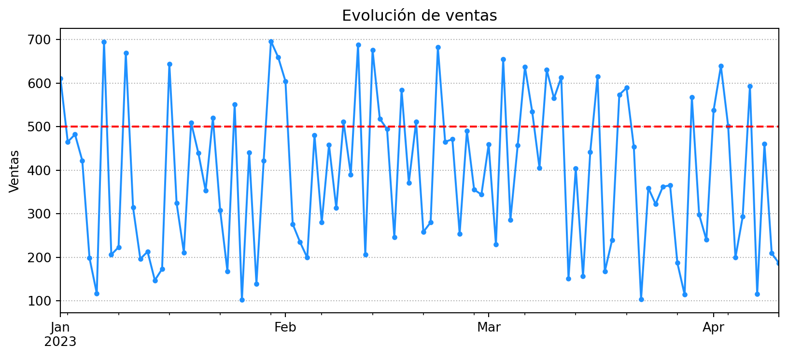
Ejercicio 2
Crea un histograma que muestre y compare la distribución de gastos en marketing y los gastos de personal. Recuerda incluir atributos de forma. Si no sabes cómo crear esta visualización te sugiero consultes en la documentación de matplotlib.
NotaSolución
df.plot(
kind = "hist",
y = ["gastos_marketing", "gastos_personal"],
bins = 10,
alpha = 0.5,
title = "Distribución de gastos",
xlabel = "USD",
ylabel = "Frecuencia observada",
figsize = [6,4],
color = ["goldenrod", "green"]
)
plt.show()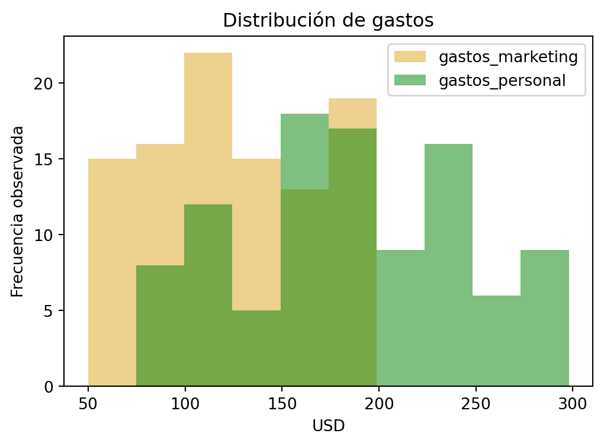
Ejercicio 3
Crea un gráfico de cajón para tener una idea general de la distribución, dispersión y valores atípicos en las ventas, gastos de marketing y gastos de personal. Recuerda incluir atributos de forma. Si no sabes cómo crear esta visualización te sugiero consultes en la documentación de matplotlib.
NotaSolución
df.plot(
kind = "box",
y = ["ventas", "gastos_marketing", "gastos_personal"],
figsize = [6,4],
vert = False,
widths = 0.6,
title = "Distribución de ventas y gastos",
color = dict(
boxes = "lightblue",
whiskers = "dodgerblue",
medians = "darkblue",
caps = "tomato"
),
patch_artist = True
)
plt.grid(axis = "x")
plt.show()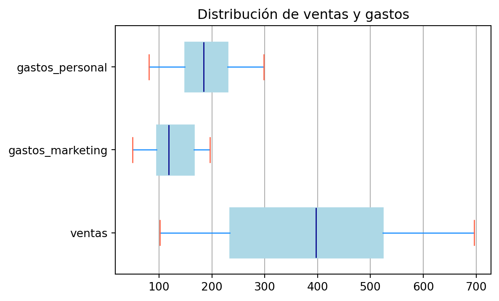
NotaHistogramas y gráficos de cajón
Los histogramas y los gráficos de cajón son herramientas de gran utilidad para estudiar el comportamiento de variables desde una perspectiva técnica estadística. Te sugiero que investigues sobre estas visualizaciones pues te serán de mucha utilidad en tus labores de analista o científico de datos dada su capacidad para representar visualmente características de centralidad, dispersión y sesgo de variables.